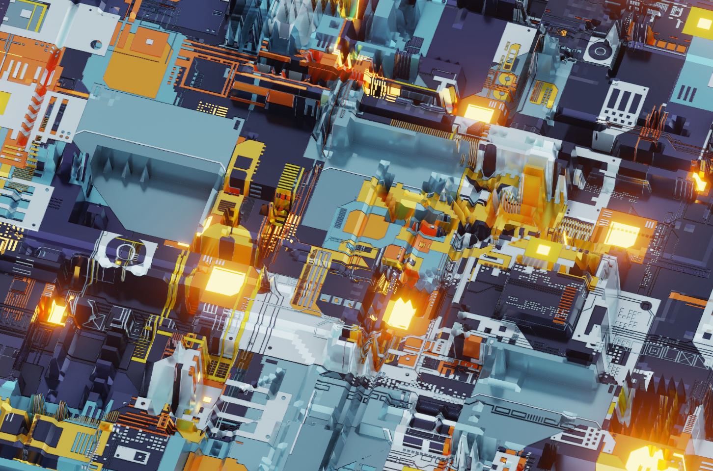
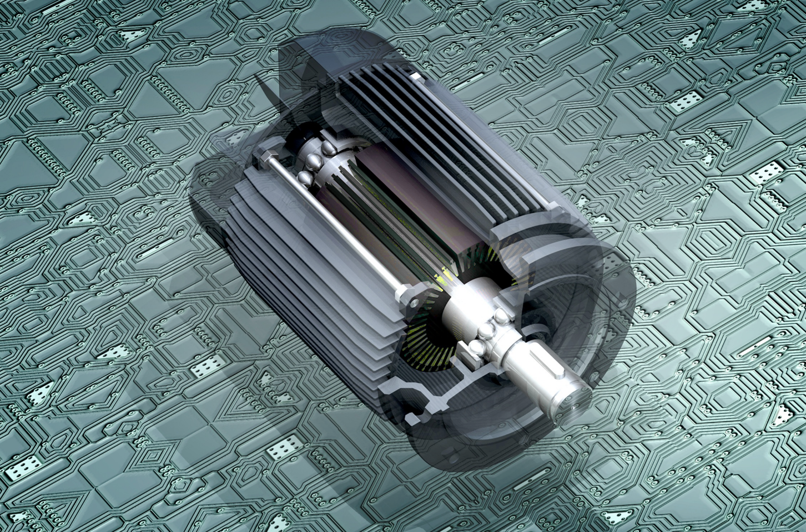
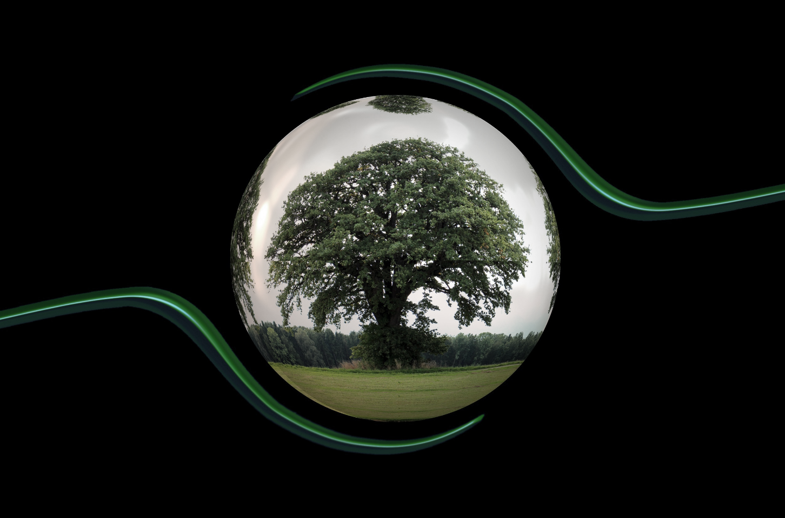
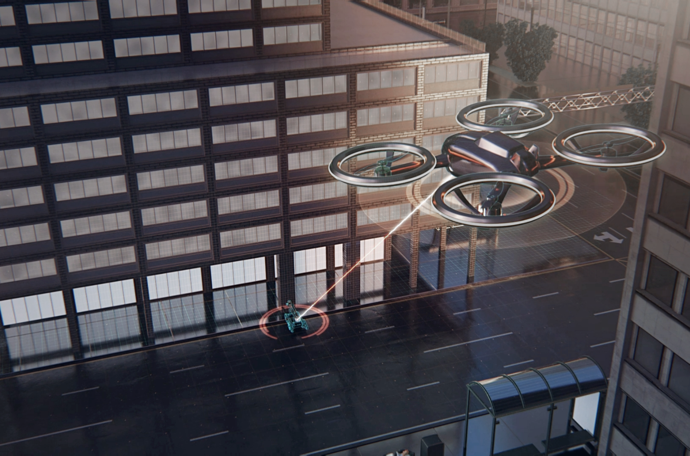

Sustainable technologies
우리는 지구를 보호하고 인류의 삶의 질을 향상시키며, 미래의 지속가능한 성장을 위한 핵심기술개발에 집중합니다.
We, Hanwha Aerospace, focus on developing core-technology that foster sustainable growth, improving human life, protecting our community and Earth.
미래를 위한
기술
-
Space access
발사체 재사용 기술
반복적으로 재사용 가능한 발사체 개발을 통해 New Space 시대를 열어가는 데 결정적인 역할을 해 나가겠습니다.
미래엔진
메탄, 수소 등을 추진제로 활용한 미래형 발사체 엔진을 우주발사체에 적용해 나갈 것입니다.
우주 탐사기술(ISRU)
우리는 아르테미스 프로젝트에 참여하여 달(moon)에서 새로운 가능성을 찾아갈 것입니다. 지속적인 우주개발을 위해 필요한 자원을 현지에서 조달하고 생산하여 더 먼 우주로 나아갈 기반기술을 확보해 나갈 것입니다.
-

Digitalization
Digitalization
최첨단 ICT, 자동화 기술과 데이터 수집/분석 기술을 산업 전반에 도입하여 생산성을 향상시키고, 품질/안전을 극대화 하고 있습니다.
지구를 위한
기술
-

Eco-friendly mobility systems
하이브리드 전기추진 시스템
전기추진 시스템을 결합한 하이브리드 추진시스템을 다양한 Mobility에 적용하여 엔진 효율성을 극대화하고 탄소 등 위해가스 배출을 최소화합니다. 이는 미래 수소연료나 전기차 시스템으로도 쉽게 전환이 가능한 친환경 시스템입니다.
-

De-carbonization
무탄소 동력시스템
수소 암모니아 등을 활용한 무탄소 동력시스템을 선박, 항공기, 장갑차 등 모든 모빌리티 체계에 적용시켜 지구의 탄소중립을 목표로 나아가고 있습니다.
사람을 위한
기술
-

Autonomous mobility systems
자율주행 플랫폼 제어기술을 통한 무인화
우리의 고성능 자율 플랫폼 제어기술을 자동차, 드론, 선박, UAM, 로봇 등 모든 모빌리티 플랫폼에 적용하여 무인화 체계로 발전시켜 나가고 있습니다.
-
Solutions for secured communication
Anti-jamming solutions
통신간 발생가능한 신호교란(jamming)을 방지하는 기술을 초소형화, 정밀화 하여 다양한 체계에 적용, 안전한 소통을 실현합니다.